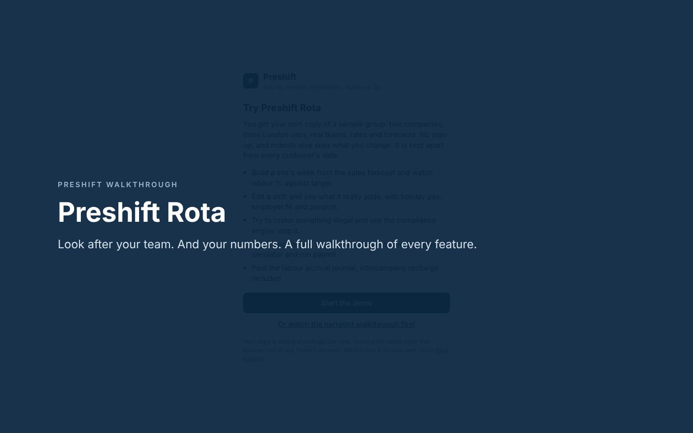

Next week's rota still isn't out.
The team cannot plan childcare, study or a second job. The GM is building it on a laptop after close, from last week's spreadsheet.
A late rota tells your team their lives come second to the business.
The rota is where culture and cost meet. Preshift sizes each shift to the forecast, so the team is not run ragged on a busy night or padded out on a quiet one. It shares the hard shifts fairly, protects rest, gets the rota out in good time and gives people a say in when they work. And it costs every shift the way payroll will, so the numbers hold.
Built by operators and the accountants who close their books. Rates set for 2026/27.
If you run more than one site, this is how the rota goes today, for your team and for your margin.
The team cannot plan childcare, study or a second job. The GM is building it on a laptop after close, from last week's spreadsheet.
A late rota tells your team their lives come second to the business.
Nobody planned it. The rota just drifted onto the people who never say no, with a close then an open and no weekend off in a month.
Your best people carry the hardest shifts until the day they hand their notice in.
Nobody meant to. The rota tool let it through, the same way it let through the 9 hour turnaround and the missed break.
The rules exist to protect people. A spreadsheet will not enforce them for you.
The rota said 26%. Payroll says 31%. Holiday, employer NI and pension were never on the rota, so nobody can say where the five points went.
Five points on £40k a week is £104k a year, and the first response is usually to cut hours.
Every shift shows the GM two things at once: what it does to the person working it, and what it does to the week's labour. Rest, fairness, notice and wellbeing sit beside cost, target and the accrual, so neither is traded away without anyone noticing.

Each day's shifts laid over its sales curve, with the hours short or over beneath and the day's labour % beside it. Drag a shift to move it; the rota P&L on the right updates as you go.
Each site's forecast comes from its own tills, weather, events, bookings and school holidays. Hourly demand becomes headcount per role, so the Friday rush is covered and the Tuesday lull does not carry a spare server.
Weekends, closes and late finishes are tracked over four weeks so the same people do not carry them. Rest between shifts is checked across the week boundary, and availability and days off are respected by the build.
Gross pay, premiums, holiday, employer NI, pension and paid travel between sites, worked out on the whole week. The labour accrual posts to Xero before payroll runs, so the P&L is right on day one.

26 min · captionsA narrated tour of every part of Preshift on the live demo's three London sites, in chapters, so you can jump to what matters to you.
Hospitality is a people business. The rota decides when your team sleeps, sees their families and gets home safely. Preshift gives GMs what they need to look after people, not just to count their hours.
Your team gets their rota, a say in when they work, and a voice, on their own phone. No app store, nothing to pay per head, and every swap or request is checked by the same rules as the manager's rota.
A week of labour, start to finish, without a spreadsheet in sight.
Sales and covers by hour, per site, from eight weeks of tills, the UK trading calendar, weather, local events, covers on the books and school holidays. Overrides are scored against the model.
One button fills the week legally, fairly and at the right cost. The GM adjusts on the timeline, the Gantt or by person, with rest, fairness and cost in front of them. It goes out a week ahead.
Staff clock in on their phone and swap shifts in the app. The cut call reads the night as it trades, and the wellbeing view shows the GM who needs a conversation this week.
Lock the rota, approve time cards, pass hours to payroll by the cutoff. The accrual posts to Xero, payroll confirms it, and the variance is reviewed every week, not discovered every month.
Rota, time, people, pay and the close, on one set of rules. Switch off what you do not use yet, and turn it on as each habit takes hold.
Nobody enjoys standing around on a dead night, and nobody should be sent home on a hunch. The cut call reads the till against forecast, reforecasts the rest of the night and offers early finishes on the facts, with what each saves and what each costs the person.
| Grace · Server · finish 21:00, not 23:00 | £34.10 |
| Callum · Bartender · finish 22:00, not 00:00 | £31.60 |
| Freya · Runner · finish 21:00, not 22:00 | £21.30 |
| Marco · Chef · inside guaranteed hours, stays | £0.00 |
Illustrative. Savings include holiday, employer NI and pension on each person's week.
Looking after people is easier when the numbers are right, because cuts made in a panic at month end land on the team. Move the sliders and see what a shift really adds once holiday, employer NI and pension are counted.
| Gross pay | £0.00 |
| Holiday accrual (12.07%) | £0.00 |
| Employer NI (15% over £96/wk) | £0.00 |
| Employer pension (3% of qualifying earnings) | £0.00 |
| Marginal cost of this shift | £0.00 |
Illustrative. 2026/27 rates, single employment, weekly pay period, no premiums. The product uses the same rules.
Employment law exists to protect your team. Every shift is checked as it is built, dragged, swapped or claimed, by the GM, the staff app, the AI or the API. Blocking issues stop the rota being published until they are fixed.
Claude works inside Preshift through the same cost model, compliance engine and access rules as every screen. It cannot roster illegally, see what it should not, or change anything without a manager's say-so.
Drafts the week for one site, a company or the group: home team first, then sister sites. Spreads weekends and closes fairly. The GM sees labour % before and after, then applies it in one save.
Answers questions about the rota, labour, the team and holiday from your own data. Every change comes back as a card to confirm. Never sees NI numbers, addresses or absence reasons.
Sign in once from claude.ai and Claude can read the week, cost and compliance, takings and clocked time, and build or publish, as you and only at your sites. Open API and webhooks for everything else.
Runs on your own Claude API key with monthly and daily spending limits you set. An owner can switch AI rota writing off for the whole business from the Features screen.
One page under Admin shows every connection and whether it is working.
Most rota tools serve one side. Run too lean and people burn out, miss breaks and leave. Run too heavy and margin leaks until someone cuts hours in a hurry. Both happen on the rota. Preshift puts the person and the pound side by side on every shift, so a GM can get the best out of the team and balance the books in the same decision.
The same people on every close, short breaks, no weekend off. Good people leave, and replacing them never shows on the rota.
Six on the floor on a quiet night. Five points over target, found at month end, and fixed by cutting hours.
Rota to payroll variance, as a share of labour cost.
Notice of every rota, so people can plan their lives.
To close the month for sites on Preshift.
Of weeks with labour % within one point of target.
The targets we hold ourselves to with every site.
Neither of us could build this alone as credibly. Together we cover the data, the floor and the ledger.
Runs technology and marketing for UK multi-site hospitality groups. Brings the sales, covers, weather and footfall feeds that drive the forecast, and the onboarding that gets you live.
Hospitality people first, founded by a restaurateur turned accountant who has run the floor and written the rota. Brings the cost model, the 3-day close, the twelve-week labour programme and a labour number signed off by the people who produce your management accounts.
Everything is included at every site: the rota built from your forecast, the compliance engine, the cut call, clock-in and the staff app, messages, holiday, HR and wellbeing, payroll hours, labour cash and the labour accrual. Hire for the summer without the bill going up. 14 days free, no card. Prices exclude VAT.
| Sites 1 to 5 | £119 per site a month |
| Sites 6 to 20 | £99 per site a month |
| More than 20 sites | Group plan |
Each site is charged at the rate of its band, so adding a site never makes the others dearer.
| VAT at 20% | £23.80 |
| Total a month with VAT | £142.80 |
A group your size wants a contract, a single invoice across companies and onboarding run with you, not a card form. We agree a per site rate below our published one.
Talk to usFrom £119 per site a month.
Sign up yourself, set up your sites and pay by card or yearly. Month to month after the free trial.
30% off for two years.
A small group of multi-site operators going live first, with direct access to the people building it.
Bundled into your accounting service.
For clients of a Preshift accounting partner. The rota feeds your management accounts and the 3-day close.
Payroll runs in your own TeamPay account, billed by TeamPay. The AI features use your own Claude API key, with spending limits you set, and can be switched off. Prices exclude VAT at 20%.
No. It is a tool for running labour well, which sometimes means adding hours, not cutting them. The build covers busy shifts before they start, flags gaps you cannot legally fill as a hiring signal, shares weekends and closes fairly, and warns before next week cuts someone's hours sharply. The cost side is there so decisions are made on true numbers in the week, not in a panic at month end, when the cuts land on the team.
Most rota tools either schedule shifts or report cost. Preshift does both on one set of rules: it looks after the people on the rota (fairness, rest, notice, wellbeing, a staff app they will use) and its cost is the cost on the P&L, fully loaded, reconciled to payroll and posted as the labour accrual. Ops and finance work from the same numbers, and the team feels the difference.
From each site's own hourly till sales: the same weekday and hour over the last eight weeks, recent weeks weighted most, with bank holidays, the UK trading calendar, weather, local events, school holidays and covers on the books allowed for. Square connects directly; other tills import from their CSV export. Accuracy is measured every week, and people's overrides are scored against the model.
Payroll runs natively with TeamPay, one employer per PAYE scheme, with starters, leavers and approved hours synced and each pay run reconciled back to the accrual. The labour accrual posts straight into Xero by its API, one journal per company, or downloads in Xero manual journal format.
No. They open an invite link on their own phone, choose a password and add it to their home screen. It clocks them in, shows their rota, takes requests, carries messages and notifications, and shows their tips. Shared iPads at the door work as clocking kiosks.
Yes. An owner switches sections on and off from the Features screen. Nothing is deleted and nobody's access changes; switching a feature back on restores it as it was. Most groups start with the rota, clock-in and payroll, and add the cut call, coaching and prime cost as each habit takes hold.
It works through the same compliance engine, cost model and access rules as a manager, so it cannot roster illegally or see personnel data it should not. Every change is shown for a person to confirm first. It runs on your own Claude key with spending limits you set, and an owner can switch AI rota writing off altogether.
Hospitality hires for the summer, for Christmas and for every new opening, and turns staff over fast. A price per head charges you for exactly the flexibility a rota exists to manage. Per site, your bill follows your estate, not your headcount.
Subscribe at any point in the trial and you are not charged until it ends. If you do not, changes pause and everything stays readable, so your staff records and pay history are never held back. Subscribing picks up exactly where you left off.
Yes, from Billing at any time. Monthly plans run to the end of the month you have paid for; yearly plans to the end of the year. After that everything stays readable, so your records are never held back.
We do. Minimum wage bands, employer NI, the pension band and holiday accrual are held in one place, set for 2026/27 and re-checked against GOV.UK before every new tax year. The Employment Rights Act 2025 measures are built in, with the figures the regulations will set held as settings until they are made.
Direct connections to more tills beyond Square, to applicant tracking so new starters arrive with their details, and to digital right to work checks, plus payslips and P60s in the staff app as soon as TeamPay shares them. New features ship every week and are shown in the app each Monday.
Half an hour on Zoom or in person. Bring last month's rota and payroll. We will show you where the points went, and who has been carrying the hardest shifts.